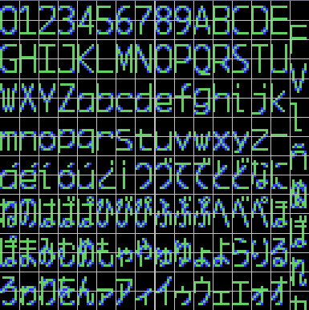
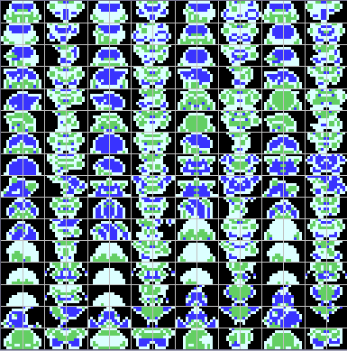
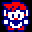
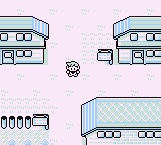
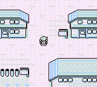
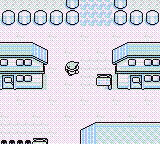

Por DaRKWiZaRDX
Bienvenid@s a una de las partes más entretenidas (o al menos para mí) del Rom-hacking, se trata de la edición de gráficos, las modificaciones de textos que no aparecen como texto normal en el juego, la apariencia de los personajes del juego, la fuente y muchas cosas más.
¡HAZ SIEMPRE COPIAS DE SEGURIDAD! EDITANDO GRÁFICOS TAMBIÉN HAY POSIBILIDAD DE QUE MODIFIQUES DATOS O CÓDIGO IMPORTANTE PARA EL JUEGO
Es bastante simple, además de texto común (es decir, el que editamos con el editor hex) muchos juegos usan gráficos directamente en el juego, y en esos gráficos está contenido el texto, es decir, que es bastante común que por ejemplo en un RPG no encontramos los textos para "POISON", "MISS" y esas cosas, ya que lo más común es que sean gráficos directos.
Además del motivo que acabo de mencionar, para la mayoría de las traducciones a español que hagamos necesitaremos algunos símbolos que no se encuentran en el alfabeto inglés (ñ, Ñ, á, é, í, ó, ú, Á, É, Í, Ó, Ú, ¡, ¿ entre otros), entonces lo que deberemos hacer es reemplazar alguna letra en la fuente original e insertar la letra que nosotros queremos, lo más normal es reemplazar letras o caracteres que se usen poco en el juego, o incluso hay muchos juegos que tienen espacio vacío en el que podemos insertar nuestros caracteres.
Una gran ventaja también tenemos si traducimos Japonés -> Español o Japonés -> Inglés -> Español, ya que en la mayoría de estos casos tendremos una gran cantidad de símbolos japoneses (katakanas, kanjis, etc.) que no usaremos y podemos reemplazar por símbolos que sí usemos.
Por ejemplo, esta es la fuente del Megaman Zero 3 con los caracteres en español ya agregados (la mayoría).

Como puedes ver modifiqué varios símbolos japoneses para agregar símbolos del
español.
Fácil, hay varios programas que permiten editar los tiles (así se les
denomina a los cuadros de 8x8 píxeles).
Yo recomiendo Tile Layer Pro y Tile Molester (éste último requiere las librerías
java de http://java.sun.com).
Vamos a hacer un paso a paso con el TLP (Tile Layer Pro =P)
- Abrimos el programa
- Abrimos nuestra ROM
- A continuación nos aparecerá mucha "basura", debemos bajar y lo más probable
es que comencemos a ver imágenes del juego.
- Si encontramos las imágenes, buena suerte, puedes hacerle clic con el botón
izquierdo del mouse y luego editarla en el cuadro que aparece al costado ("Tile
Editor").
- Si no encontramos las imágenes podemos cambiar de codec, esto se hace mediante
el menú View -> Format. De ahí podemos elegir varios formatos para ver si
podemos encontrar alguno de los gráficos del juego.
CONSEJO: Es bastante probable que si lo que buscas es la fuente del juego en un
juego de SNES la encuentres usando el codec de Gameboy.
- Si aún no puedes encontrar las imágenes intenta con algún otro editor que
soporte más formatos (como el Tile Molester), si aún así no los encuentras, es
bastante probable que estén comprimidos, en ese caso, busca ayuda en algún foro
o intenta aprender ensamblador para poder hacer un descompresor (Ack, me fui de
tema, es mala suerte si es un juego con compresión).
Veamos un poco de Pokemon Red de Gameboy en el offset $14000

Durante el juego el sprite de nuestro personaje se ve así:
(No se ven los colores porque el juego está diseñado para Gameboy Pocket)
Los sprites en este juego están en orden consecutivo, es decir, tile superior izquierdo, superior derecho, inferior izquierdo e inferior derecho (es la forma más común de ordenar sprites), entonces tenemos que buscar cuatro tiles consecutivos que ordenados de esa forma den la imagen del sprite en el juego (no importa si son distintos colores, ya que eso lo define el editor gráfico).
Si miramos un poco vemos que el que está al medio de la segundo fila es el
primer tile de nuestro sprite, lo que haremos será modificarlo para que en vez
de nuestro sprite aparezca el de Gary.
Gary -> 
Entonces en la pantalla anterior (la de todos los sprites juntos) tenemos que hacer algo muy simple, tan solo arrastrar los sprites de Gary con el botón izquierdo del ratón y sobre-escribir los tiles del antiguo sprite. Pero CADA UNO EN SU LUGAR, es decir, el tile superior izquierdo de Gary sobre el tile superior izquierdo de Red (el sprite anterior), una vez hayamos reemplazado los cuatro guardamos y probamos la ROM:

¡WEEEE! ¡Pero hey! ¡Aquí hay un problema! Si no lo has probado no te darás
cuenta, pero si has seguido estos pasos verás que el sprite solo cambia al de
Gary cuando miras hacia abajo, y eso es lógico, ya que sólo cambiamos el sprite
que miraba para abajo, si queremos que nuestro personaje se vea como Gary cuando
camine en cualquier dirección debemos reemplazar todos los sprites de Red por
los correspondientes sprites de Gary, es decir, reemplazar el sprite de Red
caminando hacia la izquierda por el de Gary caminando a la izquierda, etc.
Una vez que reemplacemos todos los sprites veremos el siguiente cambio:
QUIETO:  EN MOVIMIENTO: 
Bueno, a eso voy, para mi tiene que ver mucho con el tema, por más que no hicimos nada de "Rom-hacking" ayuda a entender un poco el tema de los gráficos, cómo se guardan los sprites, etc., pero bueno, si lo que uno quiere es usar símbolos castellanos en su traducción debe agregarlos con el editor en donde encuentre un tile/letra que no se use mucho en el juego o si encuentra un tile vacío donde puede insertar su letra.
Si lo que hiciste fue reemplazar un caracter que tenías en la tabla y no se
usaba en el juego, es tan simple como cambiar el caracter de la tabla por la
letra que dibujaste.
Si has insertado la letra en un espacio en blanco junto a la fuente común, busca la letra más cercana a la letra editada y busca su
equivalencia en la tabla, si por ejemplo tenemos que 50=z y tres tiles después
de la 'z' viene el tile que editamos debemos sumar la diferencia de tiles y
agregarlo a la tabla, como en este ejemplo la diferencia de tiles era de 3,
pondremos:
53=caracter
De hecho al principio esto puede parecer algo complicado, pero con un poco de práctica y jugando un poco con ROMs se hará más fácil, el editar gráficos es en mi opinión una de las partes más divertidas del rom-hacking, pero bueno, para gustos los colores =P, así que bueno, la próxima sección ya es sobre punteros, y eso es algo como un poco más avanzado, aunque se puede hacer una traducción de excelente calidad aprovechando espacio con ellos. Así que bueno, cuando gustes pulsa el enlace :)